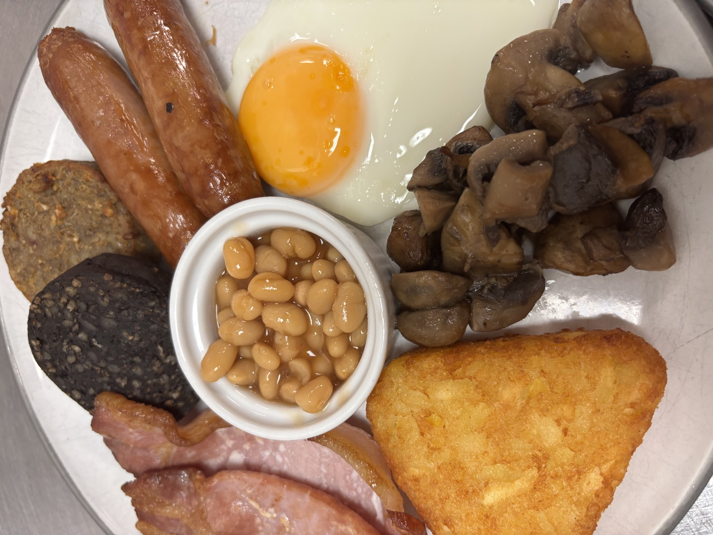
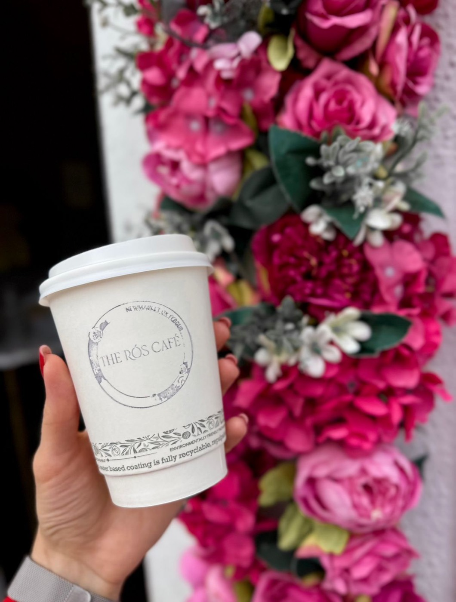

Breakfast
Start your day right with our freshly made breakfast in Newmarket on Fergus. Full Irish, avocado toast, homemade scones and more — served all day.
View Breakfast Menu →"Fresh food, warm hearts & homemade everything."
Nestled on Ennis Road in the heart of Newmarket on Fergus, The Rós Café is your go-to destination for freshly made breakfast, delicious lunch, artisan coffee, homemade pastries, custom occasion cakes and professional outside catering across Co. Clare.

From early morning breakfasts to leisurely lunches, custom cakes to event catering — we've got you covered.
Start your day right with our freshly made breakfast in Newmarket on Fergus. Full Irish, avocado toast, homemade scones and more — served all day.
View Breakfast Menu →Enjoy delicious lunch in Newmarket on Fergus. Daily specials, homemade soup, freshly made sandwiches and wraps. Dine in or takeaway.
View Lunch Menu →Beautiful custom occasion cakes made to order in Co. Clare. Birthday cakes, wedding cakes, celebration cakes and gluten free options.
View Cake Options →Professional outside catering across Co. Clare. Fresh homemade food for parties, weddings, communions, corporate events and more.
View Catering Services →
"Have you passed through Newmarket on Fergus and seen a cute little pink building on Ennis Road?"
That's us — The Rós Café. We're a family-run café bringing fresh, homemade food and warm Irish hospitality to Newmarket on Fergus and the surrounding areas of Co. Clare, including Ennis, Shannon, Sixmilebridge and beyond.
Every dish is made with love, using locally sourced ingredients wherever possible. From our freshly baked scones to our custom occasion cakes and professional outside catering service, we put care and attention into everything we do.
Come visit us →See what's happening at The Rós Café — fresh food, happy customers and behind-the-scenes moments.